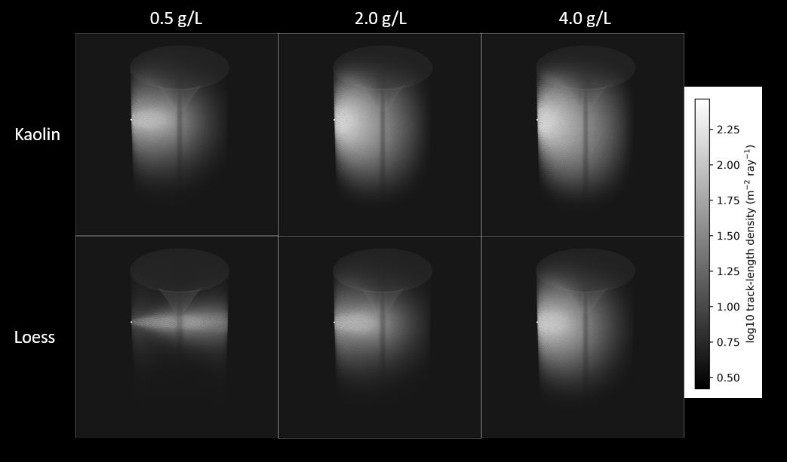
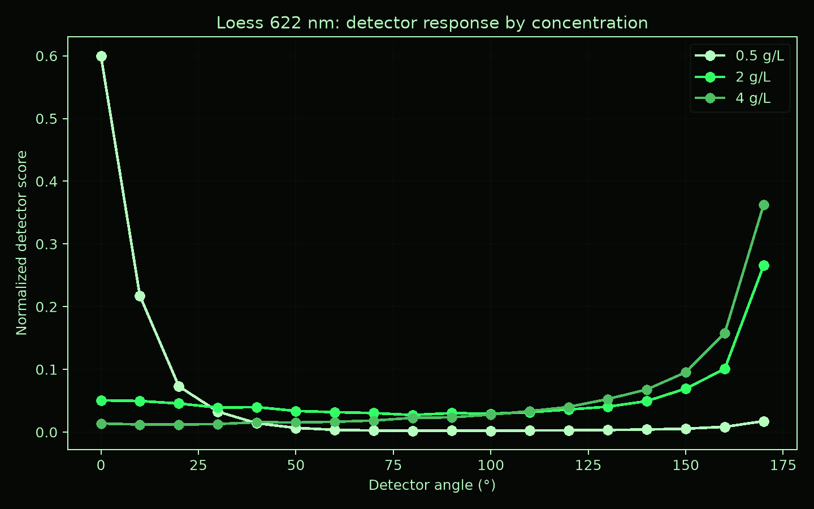
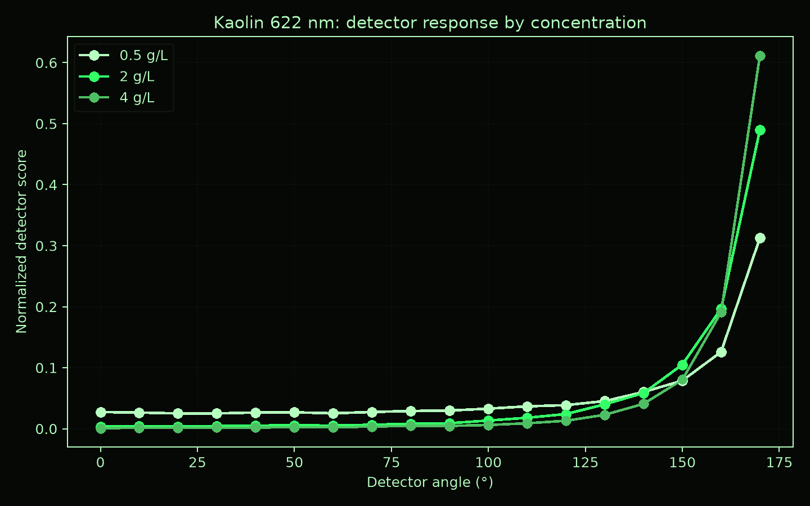

Engineering Portfolio
Technical Article • Turbidity • Suspended Sediment • Scientific Instrumentation
Ben G. B. Kitchener
Turbidity measurement is widely used as a practical proxy for suspended sediment concentration, water quality, and optical clarity. However, turbidity is not a direct physical measurement of sediment concentration. It is an optical response that depends on particle size, particle shape, refractive index, wavelength, detector geometry, and the optical design of the instrument.
My research interest in turbidity developed through work on suspended sediment monitoring and the design of scientific instrumentation for laboratory and field-scale sediment research. This included the development of low-cost turbidity measurement hardware and a review of the physical principles behind turbidity measurement.
Turbidity instruments do not measure sediment mass directly. They measure scattered or transmitted light, which is then related to a calibration standard or empirical sediment concentration model. This means that two water samples with the same suspended sediment concentration can produce different turbidity readings if their particle size distributions, mineralogy, colour, or organic content differ.
Different turbidity instruments use different optical geometries. Some measure light transmitted through the sample, while others measure light scattered at an angle. Nephelometric instruments commonly use detection near 90 degrees, but this is only one possible measurement geometry. The geometry of the light source, detector, sample path, and wavelength selection all influence the instrument response.
In my PhD thesis I challenged conventional turbidity units and their use as proxies for suspended sediment concentration. I developed a research instrument and proposed calibrated, multi-angle light-attenuation measurements reported in decibels, with angle and wavelength explicitly recorded to improve comparisons between instruments. Through numerical modelling, I identified the importance of beam divergence and the need to combine Mie scattering with geometric optics. I also explored how further modelling could help infer sediment particle size and shape and improve concentration estimates. Initial modelling of the TARDIIS instrument was developed in LabVIEW. This platform is actually a bad choice for model development for many reasons, but it was the only tool I had available at the time. I have now developed a GPU-accelerated Monte Carlo model called CLARITAS, which is now available on GitHub, and is discussed in detail here: CLARITAS. The new CLARITAS model (the original is also called CLARITAS, but is thankfully not available for download) attempts to account for the full experiment geometry, including the light source, detector, and sample container, and the water vortex caused by the stirring of the sample. It also includes a more complete treatment of Mie scattering and geometric optics, and models the steady-state distribution of sediment in the water column. There is still room for improvement, and I intend to continue its development in the future. However, in its current form it is a useful tool for understanding the optical response of sediment-laden water and the limitations of turbidity measurement. It can also (with some effort) be adapted to other instrument geometries and sediments. Future revisions will have a more configurable design.


I designed and built a scientific instrument for water turbidity measurement, described in a HardwareX journal article.
